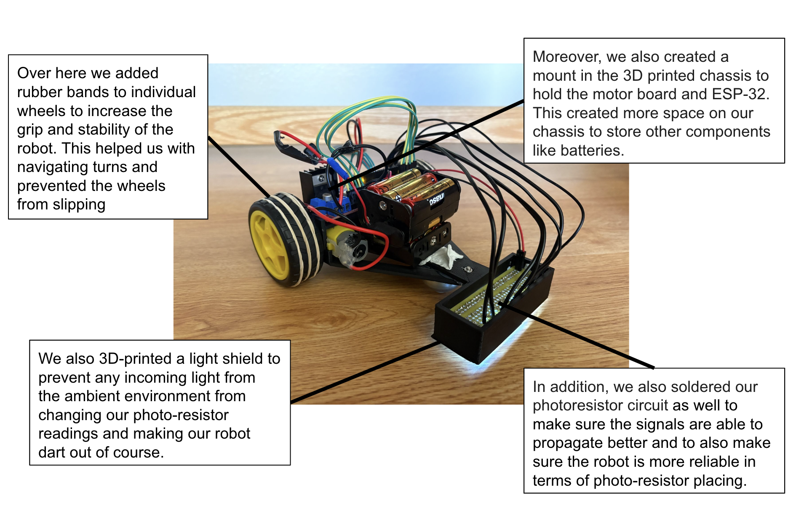
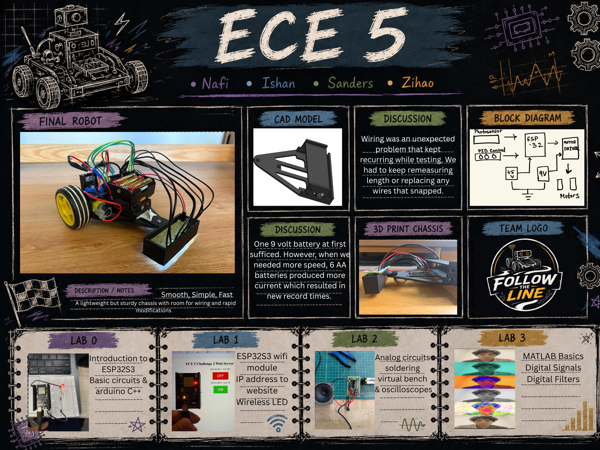
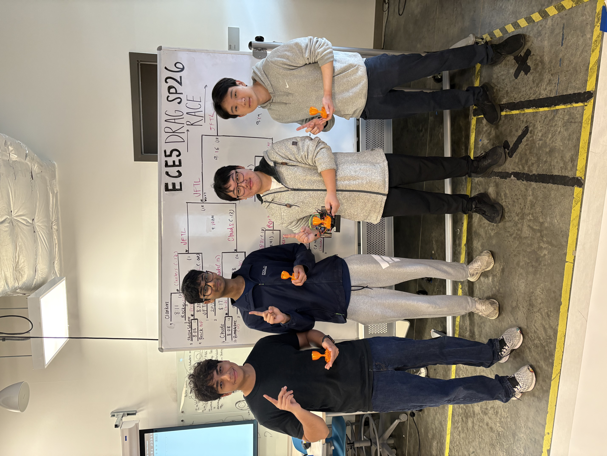

Initial Design
Below is a photograph of our initial robot design. The robot uses photo-resistors to detect the line and navigate autonomously. However, since we were in a very early stage of design, there were many problems with the robot that we worked on improving throughout the class in preparation for the final competition.

First Working Demonstration
A demonstration of the autonomous robot navigating a path using photo-resistors. This was our robot before we transitioned from breadboards to fully soldered components. As you can see, although the robot managed to follow the line quite well, it was still very unstable and went off course a few times. Therefore, we worked on designing a new chassis as well as light-shields for the photo-resistors. We also transitioned to soldered components to improve the reliability of signal propagation.
PID Control Final Improvements
Our final robot integrates a PID controller with three major components. The proportional gain weights the current error, which is essentially responsible for computing the difference between the middle photo-resistor (over black) and its neighbours multiplied by a tunable constant. The derivative gain tracks the rate of change in error, reducing jitter that a pure proportional controller would exhibit. It does this by finding the rate change in error and multiplying it by a tunable parameter called the derivative gain. The derivative gain is especially useful for increasing the stabillity of our robot. The integral component accumulates steady-state error over time and multiplies that by the tunable integral gain. This helps elimate steady-state errors that P and D alone cannot eliminate.

| Track | Key Adjustment | Reason |
|---|---|---|
| Drag Race | ↑ Speed & Kp | This was to increase the speed of the robot on the straights and also improve its reaction time |
| Frequency Sweep | ↓ Speed · ↑ Kd | We reduced the speed heavily to make our robot much more stable and increased the derivative gain to make it jitter less. |
| Loop Track | ↑ Speed | In order to maximise the number of laps completed we increased the speed for this track. |
Robot Poster

Competition Results
Competition track footage below. In terms of the competition results, we placed first on the drag-race track, second on the frequency sweep track and ninth on the loop track. Some of our recorded videos are shown below.
Team Photo & Reflection
In terms of improvements, one major thing we could have done was optimise the code further. For example, when turning, we could have programmed the wheels to move in opposite directions to allow the robot to make even sharper turns. This was something that other teams in different sections did to improve their performance. Another thing we could have done is 3D-printed a wider chassis, as not only would this make the robot more stable, but it would also help with load-balancing. This is because right now our robot has a lot of weight in the back due to the heavy batteries, and with a wider chassis, we could have distributed it more evenly. Another thing we messed up on was our photo-resistor alignment. The region in which we put the photo-resistors was quite cramped making it difficult to adjust them during compeition.
